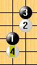
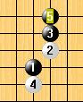

【此文由WUDI和yeyuwzq合作完成】
自06年30种新规则提出以外，中国就有不少棋手对这些规则展开激烈讨论。在30种新规则中，很多棋手也比较看好Yamaguchi规则与Tarannikov规则。这两个规则都尽量地简单，并且增加了变化量，同时一定程度限制了研究的优势。但也存在些缺点。
Yamaguchi，根据该规则，不难发现发现部分开局是没有3打的，比如瑞星；而部分开局依然黑必胜，比如花月。随着研究的深入，相信越来越多的开局能得到结论。
事实上不少中国棋手已经对部分开局的3打有深入的研究，比如明星，残月，云月。在中国研究的进度是很快的，比如06年中国棋手找到了几乎所有黑优开局的黑必胜，07年对4大平衡局有了非常深入的研究。因此我们认为Yamaguchi规则增加的变化太少，只能成为2~3年短期的过度规则。
Tarannikov，相比之下我们认为该规则更合理。在该规则下，我们认为任意开局的大多数4手都能找到平衡的第5手，它增加了更多的变化；但这也意味着掌握更多的平衡4，5手的棋手将拥有更大的优势，而缺乏研究的棋手很容易落入圈套中。如此，可以想象棋手不得不去学习大量的新定式。我们认为这是改规则必须注意的。
比如当对手下出这样的4手，这形状在RIF规则下并不多见，那么你是否有把握很快找到平衡的5手？而在中国研究中部分5手已经有了明确的结论。

再看这个5手，相信这个形状很crazy且并不多见，你觉得它是黑好还是白好呢？在中国研究中，这个5是黑必胜的。

除此之外，中国棋手关于其他28种规则都有分析，这里就不全部列举。
[转载自中国连珠网]